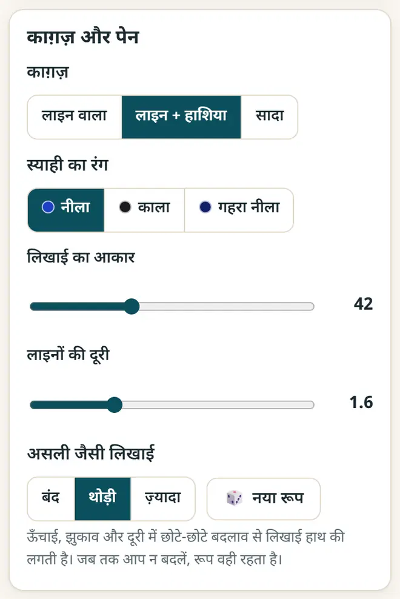
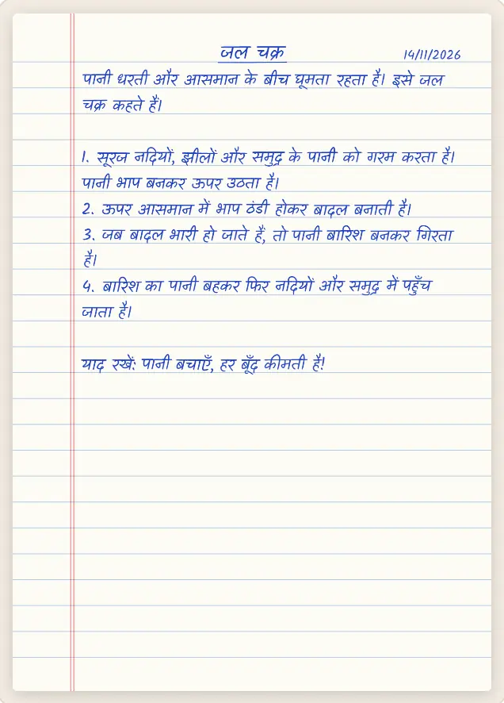

टेक्स्ट को हैंडराइटिंग में मुफ़्त बदलें
कोई कविता, शुभकामना, दीवार का पोस्टर या अपने नोट्स की साफ़ कॉपी अक्सर टाइप से ज़्यादा हाथ की लिखाई में अच्छी लगती है। यह मुफ़्त ऐप आपका टेक्स्ट आपके ब्राउज़र में ही कॉपी के पन्ने पर लिख देता है। पहले एक सच्ची बात: यह नोट्स और रचनात्मक काम के लिए है। स्कूल का जो काम हाथ से लिखना है, वह विद्यार्थी को ख़ुद लिखना चाहिए।
छोटा जवाब
टेक्स्ट से हैंडराइटिंग खोलें, अपना टेक्स्ट लिखें या पेस्ट करें, और “काग़ज़”, “स्याही का रंग” व “लिखाई का आकार” चुनें। “असली जैसी लिखाई” चुनें, ताकि अक्षर असली लिखाई की तरह थोड़े हिलें। तस्वीर के लिए “यह पन्ना डाउनलोड करें” दबाएँ, या “प्रिंट / PDF में सेव करें” दबाकर Save as PDF चुनें।
5 स्टेप में टेक्स्ट से हैंडराइटिंग
-
अपना टेक्स्ट लिखें या पेस्ट करें
टेक्स्ट से हैंडराइटिंग खोलें। यह एक नमूना पन्ने के साथ खुलता है। बॉक्स में अपना टेक्स्ट लिखें या पेस्ट करें: आप लिखते जाते हैं और पन्ना बदलता जाता है। चाहें तो पहले पन्ने के लिए शीर्षक और तारीख़ भी लिखें।
-
काग़ज़ और स्याही चुनें
“काग़ज़” में “लाइन वाला”, “लाइन + हाशिया” या “सादा” चुनें। “स्याही का रंग” में नीला, काला या गहरा नीला चुनें।

काग़ज़, स्याही का रंग, लिखाई का आकार और असली जैसा रूप चुनें। -
आकार और दूरी तय करें
“लिखाई का आकार” और “लाइनों की दूरी” को तब तक खिसकाएँ जब तक पन्ना असली कॉपी के पन्ने जैसा न दिखे और पढ़ने में आसान न हो।
-
असली जैसा रूप दें
“असली जैसी लिखाई” से ऊँचाई, झुकाव और दूरी में छोटे-छोटे बदलाव आते हैं, जैसे असली लिखाई में होते हैं। अलग रूप के लिए “नया रूप” दबाएँ।
-
डाउनलोड या प्रिंट करें
लंबा टेक्स्ट कई पन्नों पर जाता है, एक बार में 30 तक। पन्ने की PNG तस्वीर के लिए “यह पन्ना डाउनलोड करें” दबाएँ; ज़्यादा पन्ने हों तो सब एक साथ भी डाउनलोड कर सकते हैं। PDF के लिए “प्रिंट / PDF में सेव करें” दबाएँ और Save as PDF चुनें।

लाइन वाले पन्ने पर हाथ से लिखा हुआ टेक्स्ट।
जानने लायक़ बातें
- इसे ईमानदारी से इस्तेमाल करें: अपने नोट्स, शुभकामनाओं, कविताओं, पोस्टर और लिखावट के अभ्यास के पन्नों के लिए। इसे हाथ से लिखे होमवर्क या असाइनमेंट की जगह जमा न करें। वह काम विद्यार्थी को ख़ुद लिखना चाहिए।
- हैंडराइटिंग वाला रूप अंग्रेज़ी, हिंदी और मराठी में सबसे अच्छा आता है। बाक़ी भाषाएँ आपके डिवाइस के सामान्य फ़ॉन्ट में, थोड़ी हिलती हुई दिखती हैं।
- कुछ आइडिया: हाथ से लिखी जैसी कविता या शुभकामना, कक्षा की दीवार के लिए पोस्टर, या लिखावट के अभ्यास में देखकर लिखने के लिए साफ़ पन्ना।
- आपका टेक्स्ट आपके डिवाइस पर ही रहता है। कुछ भी अपलोड नहीं होता, इसलिए निजी नोट्स निजी ही रहते हैं।
नए मुफ़्त टूल और हिंदी में AI के पाठ पाएँ
हमारी ईमेल लिस्ट से जुड़ें: नए मुफ़्त ऐप, नई गाइड और AI पर हिंदी वीडियो पाठ की जानकारी आपको मिलती रहेगी। कोई स्पैम नहीं।
सिर्फ़ वयस्कों (18+) के लिए। आप कभी भी नाम हटवा सकते हैं।
हम ये टूल क्यों सुझाते हैं
- सबके लिए मुफ़्त: न विज्ञापन, न साइन-अप, न कोई पेड प्लान।
- प्राइवेट: आपकी फ़ाइलें और जानकारी आपके अपने डिवाइस पर ही रहती हैं।
- फ़ोन, लैपटॉप या स्मार्टबोर्ड पर चलते हैं, और एक बार खुलने के बाद बिना इंटरनेट भी।
- हिंदी समेत 12 भाषाओं में।
वीडियो से सीखना पसंद है? हमारे YouTube चैनल पर AI और मुफ़्त टूल्स के हिंदी पाठ देखें।
अक्सर पूछे जाने वाले सवाल
टेक्स्ट को हैंडराइटिंग में मुफ़्त कैसे बदलें?
ऐप खोलें, अपना टेक्स्ट पेस्ट करें, काग़ज़ और स्याही चुनें और पन्ना डाउनलोड कर लें। यह मुफ़्त है, बिना साइन-अप और बिना वॉटरमार्क।
क्या इसे स्कूल के असाइनमेंट के लिए इस्तेमाल कर सकते हैं?
इसे अपने नोट्स और रचनात्मक चीज़ों के लिए इस्तेमाल करें। अगर शिक्षक ने हाथ से लिखा काम माँगा है, तो उसे ख़ुद लिखें। लिखना भी सीखने का हिस्सा है, और बनाया हुआ पन्ना अपनी लिखाई बताकर देना ईमानदारी नहीं है।
क्या यह हिंदी में चलता है?
हाँ। यहाँ अंग्रेज़ी की तरह हिंदी और मराठी के लिए भी हैंडराइटिंग फ़ॉन्ट है। दूसरी लिपियों का टेक्स्ट भी पन्ने पर आता है, लेकिन आपके डिवाइस के सामान्य फ़ॉन्ट में।
क्या PDF मिल सकती है?
हाँ। “प्रिंट / PDF में सेव करें” दबाएँ और प्रिंट विंडो में Save as PDF चुनें। सारे पन्ने एक ही PDF में आ जाते हैं। “यह पन्ना डाउनलोड करें” से एक पन्ना तस्वीर के रूप में सेव होता है।
क्या यह मेरी अपनी लिखावट है?
नहीं। ऐप हाथ की लिखाई जैसा एक फ़ॉन्ट इस्तेमाल करता है। यह आपकी या किसी और की लिखावट की नक़ल नहीं करता।
काम की लगी?
इसे किसी दोस्त, साथियों या अपने स्कूल के WhatsApp ग्रुप में भेजें।